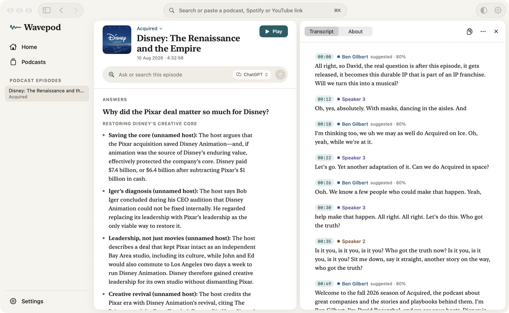
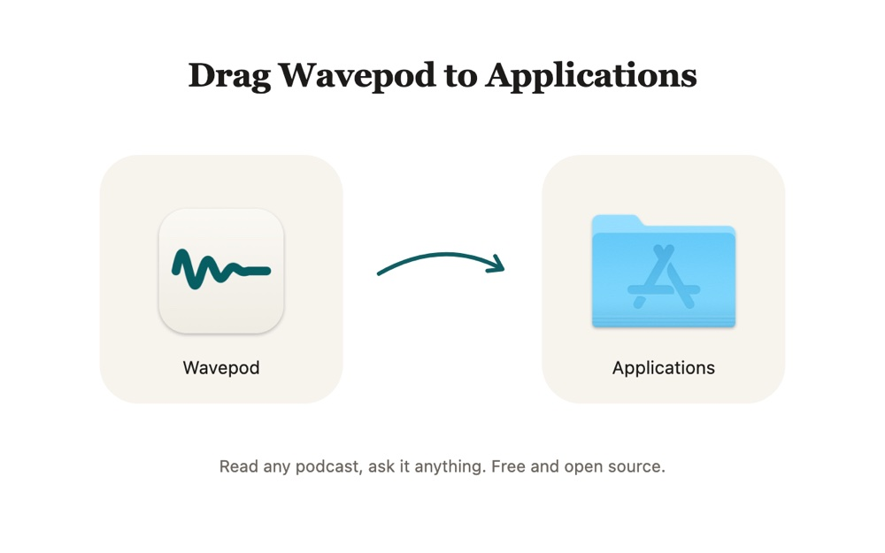

Read any podcast,
ask it anything.
Open-source on your Mac, completely free. Wavepod writes the transcript and names each speaker. It writes a summary and answers your questions with quotes.

Install
Install Wavepod in four steps
Apple did not notarize this version of Wavepod. The first time you open it, macOS asks you to confirm. You do these steps one time.
-
1
Download the app
Click Download for Mac. Open Wavepod.dmg from your Downloads folder.
-
2
Drag Wavepod to Applications
In the window that opens, drag the Wavepod icon onto the Applications folder.

-
3
Open Wavepod one time
Open Wavepod from your Applications folder. macOS shows "Apple could not verify Wavepod". Click Done.
"Wavepod" Not Opened
Apple could not verify "Wavepod" is free of malware that may harm your Mac or compromise your privacy.
-
4
Click Open Anyway
Open System Settings and select Privacy & Security. In the Security section, click Open Anyway. Click Open Anyway again and enter your Mac password.
Security
Allow applications fromApp Store & Known Developers"Wavepod" was blocked to protect your Mac.
Questions
Frequently asked questions
How does it work?
Paste a Spotify, Apple Podcasts or YouTube link, an RSS feed or the website of a podcast. You can also add an audio or video file. Wavepod writes the transcript and names each speaker from the episode. The summary is ready when the transcript is ready, and each point links to its moment in the audio. Then you can ask the episode a question. The answer quotes the transcript, in the language of your question.
How much does it cost?
Nothing. Wavepod is free and open source under the Apache-2.0 license. There is no account and no subscription.
What do I need?
You need a Mac with Apple Silicon (M1 or later), macOS 15 or later and about 4 GB of free disk space. When you open Wavepod the first time, it downloads the transcription models. You can also download a 2.3 GB model that answers questions on your Mac.
Does my audio leave my Mac?
No. Transcription always runs on your Mac. Answers and summaries also run on your Mac, unless you select your ChatGPT or Claude plan. Then Wavepod sends the transcript text to that service, but not the audio. Settings › Data and Privacy shows each network request that Wavepod makes.
Which languages does it support?
Most European languages, including English, Spanish and Catalan.
Where can it get episodes from?
From Spotify, Apple Podcasts, YouTube, RSS feeds, podcast websites, and audio or video files on your Mac. You can also follow a podcast. Wavepod then transcribes and summarizes each new episode.
Can I see the source code?
Yes. The code is on GitHub. You can read it, build the app yourself and report problems there.
Why does macOS block Wavepod the first time?
Apple did not notarize this version of Wavepod. Notarization is an Apple check of an app before you open it. For this reason, macOS asks you to confirm the first time. Follow the install steps.